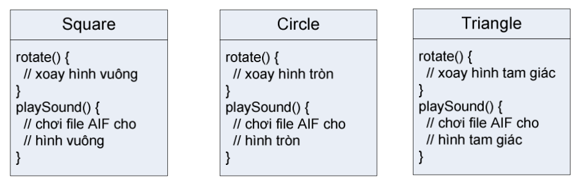
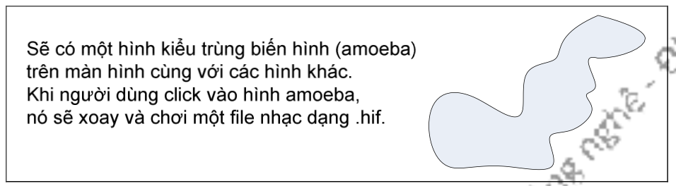
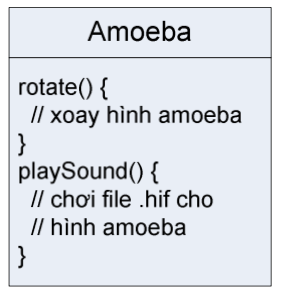
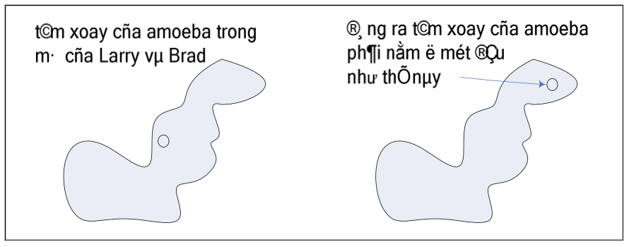
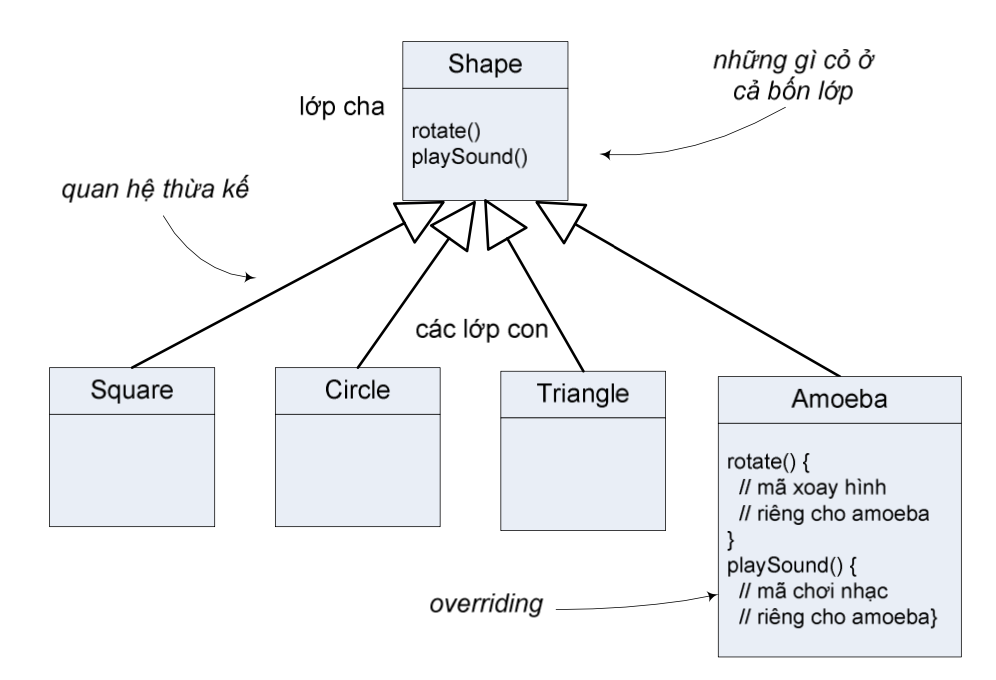

Lập trình là công đoạn quan trọng chủ chốt và không thể thiếu để tạo ra sản phẩm phần mềm. Phần mềm càng trở nên đa dạng và ngành công nghiệp phần mềm càng phát triển thì người ta càng thấy rõ tầm quan trọng của phương pháp lập trình. Phương pháp lập trình tốt không chỉ đảm bảo tạo ra phần mềm tốt mà còn hỗ trợ thiết kế phần mềm có tính mở và hỗ trợ khả năng sử dụng lại các mô đun. Nhờ đó chúng ta có thể dễ dàng bảo trì, nâng cấp phần mềm cũng như giảm chi phí phát triển phần mềm.
Trong những thập kỷ 1970, 1980, phương pháp phát triển phần mềm chủ yếu là lập trình có cấu trúc (structured programming). Cách tiếp cận cấu trúc đối với việc thiết kế chương trình dựa trên chiến lược chia để trị: Để giải một bài toán lớn, chúng ta tìm cách chia nó thành vài bài toán nhỏ hơn và giải riêng từng bài; để giải mỗi bài, hãy coi nó như một bài toán mới và có thể tiếp tục chia nó thành các bài toán nhỏ hơn; cuối cùng, ta sẽ đi đến những bài toán có thể giải ngay được mà không cần phải chia tiếp. Cách tiếp cận này được gọi là lập trình từ trên xuống (top-down programming).
Lập trình từ trên xuống là một phương pháp tốt và đã được áp dụng thành công cho phát triển rất nhiều phần mềm. Tuy nhiên, cùng với sự đa dạng và phức tạp của phần mềm, phương pháp này bộc lộ những hạn chế. Trước hết, nó hầu như chỉ đáp ứng việc tạo ra các lệnh hay là các quy trình để giải quyết một bài toán. Dần dần, người ta nhận ra rằng thiết kế các cấu trúc dữ liệu cho một chương trình có tầm quan trọng không kém việc thiết kế các hàm/thủ tục và các cấu trúc điều khiển. Lập trình từ trên xuống không quan tâm đủ đến dữ liệu mà chương trình cần xử lý.
Thứ hai, với lập trình từ trên xuống, chúng ta khó có thể tái sử dụng các phần của chương trình này cho các chương trình khác. Bằng việc xuất phát từ một bài toán cụ thể và chia nó thành các mảnh sao cho thuận, cách tiếp cận này có xu hướng tạo ra một thiết kế đặc thù cho chính bài toán đó. Chúng ta khó có khả năng lấy một đoạn mã lớn từ một chương trình cũ lắp vào một dự án mới mà không phải sửa đổi lớn. Việc xây dựng các chương trình chất lượng cao là khó khăn và tốn kém, do đó những nhà phát triển phần mềm luôn luôn muốn tái sử dụng các sản phẩm cũ.
Thứ ba, môi trường hoạt động trong thực tế của các ứng dụng luôn thay đổi. Dẫn đến việc yêu cầu phần mềm cũng phải liên tục thay đổi theo để đáp ứng nhu cầu của người dùng nếu không muốn phần mềm bị đào thải. Do đó, một thiết kế linh hoạt mềm dẻo là cái mà các nhà phát triển phần mềm mong muốn. Phương pháp tiếp cận từ dưới lên (bottom-up) hỗ trợ tốt hơn cho tính linh hoạt mềm dẻo đó.
Trong thực tế, thiết kế và lập trình từ trên xuống thường được kết hợp với thiết kế và lập trình từ dưới lên. Trong tiếp cận từ dưới lên, từ các vấn đề mà ta đã biết cách giải và có thể đã có sẵn các thành phần tái sử dụng được chúng ta xây dựng dần theo hướng lên trên, hướng đến một giải pháp cho bài toán tổng.
Các thành phần tái sử dụng được nên có tính mô-đun hóa cao nhất có thể. Mỗi mô-đun là một thành phần của một hệ thống lớn hơn, nó tương tác với phần còn lại của hệ thống theo một cách đơn giản và được quy ước chặt chẽ. Ý tưởng ở đây là một mô-đun có thể được "lắp vào" một hệ thống. Chi tiết về những gì xảy ra bên trong mô-đun không cần được xét đến đối với hệ thống nói chung, miễn là mô-đun đó hoàn thành tốt vai trò được giao. Đây gọi là che giấu thông tin (information hiding), một trong những nguyên lý quan trọng nhất của công nghệ phần mềm.
Một dạng thường thấy của các mô-đun phần mềm là nó chứa một số dữ liệu kèm theo một số hàm/thủ tục để xử lý dữ liệu đó. Ví dụ, một mô-đun sổ địa chỉ có thể chứa một danh sách các tên và địa chỉ, kèm theo là các hàm/thủ tục để thêm một mục tên mới, in nhãn địa chỉ...Với cách này, dữ liệu được bảo vệ vì nó chỉ được xử lý theo các cách đã được biết trước và được định nghĩa chặt chẽ. Ngoài ra, nó cũng tạo thuận lợi cho các chương trình sử dụng mô-đun này, vì các chương trình đó không phải quan tâm đến chi tiết biểu diễn dữ liệu bên trong mô-đun. Thông tin về biểu diễn dữ liệu được che giấu.
Các mô-đun hỗ trợ dạng che giấu thông tin này bắt đầu trở nên phổ biến trong các ngôn ngữ lập trình đầu thập kỷ 1980. Từ đó, một hình thức tiên tiến hơn của chính ý tưởng đó đã lan rộng trong ngành công nghệ phần mềm. Cách tiếp cận đó được gọi là lập trình hướng đối tượng (object-oriented programming), thường được gọi tắt là OOP.
Câu chuyện tưởng tượng sau đây1 minh họa phần nào sự khác biệt giữa lập trình thủ tục và lập trình hướng đối tượng trong thực tế của ngành công nghệ phàn mềm. Có hai lập trình viên nhận được cùng một đặc tả hệ thống và được yêu cầu xây dựng hệ thống đó, thi xem ai là người hoàn thành sớm nhất. Dậu là người chuyên dùng phương pháp lập trình thủ tục, còn Tuất quen dùng lập trình hướng đối tượng. Cả Dậu và Tuất đều cho rằng đây là nhiệm vụ đơn giản.
Đặc tả như sau:

Dậu tính toán, "Chương trình này phải làm những gì? Ta cần đến những thủ tục nào?" Anh tự trả lời, "xoay và chơi nhạc." Và anh bắt tay vào viết các thủ tục đó. Chương trình không phải là một loạt các thủ tục thì nó là cái gì?
Trong khi đó, Tuất nghĩ, "Trong chương trình này có những thứ gì...đâu là những nhân tố chính?" Đầu tiên, anh ta nghĩ đến những Hình vẽ. Ngoài ra, anh còn nghĩ đến những đối tượng khác như người dùng, âm thanh, và sự kiện click chuột. Nhưng anh đã có sẵn thư viện mã cho mấy đối tượng đó, nên anh tập trung vào việc xây dựng các Hình vẽ.
Dậu đã quá thạo với công việc kiểu này rồi, anh ra bắt tay vào viết các thủ tục quan trọng và nhanh chóng hoàn thành hai thủ tục xoay (rotate) và chơi nhạc (playSound):
rotate(shapeNum) {
// cho hình xoay 360o
}
playSound(shapeNum) {
// dùng shapeNum để tra xem cần chơi file AIF nào // và chơi file đó
}
Còn Tuất ngồi viết ba lớp, mỗi lớp dành cho một hình.
Dậu vừa nghĩ rằng mình đã thắng cuộc thì sếp nói "Về mặt kĩ thuật thì Dậu xong trước, nhưng ta phải bổ sung một chút xíu nữa vào chương trình." Hai người đã quá quen với chuyện đặc tả thay đổi – chuyện thường ngày trong ngành.
Đặc tả được bổ sung nội dung sau:
Đối với Dậu, thủ tục rotate vẫn ổn, mã dùng một bảng tra cứu để khớp giá trị shapeNum với một hình đồ họa cụ thể. Nhưng playSound thì phải sửa.
Rốt cục không phải sửa nghiêm trọng, nhưng Dậu vẫn thấy không thoải mái khi phải động vào sửa phần mã đã được test xong từ trước. Anh biết, dù quản lý dự án có nói gì đi chăng nữa, đặc tả thay đổi suốt.
Còn Tuất thì thản nhiên vừa nhâm nhi cà phê vừa viết một lớp mới. Điều anh thích nhất về OOP là anh không phải sửa gì ở phần mã đã được test và bàn giao. Anh nghĩ về những ích lợi của OOP và lẩm bẩm "Tính linh hoạt, khả năng mở rộng,...".
Dậu cũng vừa kịp hoàn thành chỉ một lát trước Tuất. Nhưng nụ cười của anh vụt tắt khi nhìn thấy bộ mặt của sếp và nghe thấy giọng sếp vẻ thất vọng "không được rồi, amoeba thực ra không xoay kiểu này..."
Thì ra cả hai lập trình viên đều đã viết đoạn xoay hình theo cách: (1) xác định hình chữ nhật bao hình; (2) xác định tâm của hình chữ nhật đó và xoay hình quanh điểm đó. Nhưng hình trùng biến hình thì lại cần xoay quanh một điểm ở một đầu mút, như kiểu kim đồng hồ.
"Mình tèo rồi." Dậu ngán ngẩm. "Tuy là, ừm, có thể thêm một lệnh if/else nữa vào thủ tục rotate, rồi hard-code tâm xoay cho amoeba. Làm vậy chắc là sẽ không làm hỏng đoạn nào khác." Nhưng một giọng nói trong đầu Dậu thì thào, "Nhầm to! Cậu có chắc là đặc tả sẽ không thay đổi lần nữa không đấy?"
Cuối cùng Dậu chọn cách bổ sung tham số về tâm xoay vào cho thủ tục rotate. Rất nhiều đoạn mã đã bị ảnh hưởng. Phải test lại, dịch lại cả đống mã. Có những đoạn trước chạy tốt thì nay không chạy được nữa.
rotate(shapeNum, xPt, yPt) {
//nếu hình không phải amoeba,
// tính tâm xoay
// dựa trên một hình chữ nhật
// rồi xoay hình
//nếu không
// dựng xPt và yPt làm offset tâm xoay
// rồi xoay hình
}
Còn Tuất, không chần chừ chút nào, anh sửa luôn phương thức rotate, nhưng chỉ sửa ở lớp Amoeba mà thôi. Tuất không hề động đến các đoạn mã đã dịch, đã chạy và đã test tại các phần khác trong chương trình. Để cho Amoeba một tâm xoay, anh thêm một thuộc tính mà tất cả các hình trùng biến hình sẽ có. Anh nhanh chóng sửa, test, và bàn giao mã cho sếp.

"Không nhanh thế được!" Dậu tìm thấy một nhược điểm trong cách tiếp cận của Tuất, và anh chắc mẩm nó sẽ giúp anh chuyển bại thành thắng. Dậu thấy mã của Tuất bị lặp, rotate có mặt ở cả bốn thứ hình, thiết kế này có gì hay ho khi phải bảo trì cả bốn phương thức rotate khác nhau?
Tuất giải thích: Dậu chưa nhìn thấy đặc điểm quan trọng của thiết kế, đó là quan hệ thừa kế. Bốn lớp có những đặc điểm chung, những đặc điểm đó được tách ra và đặt trong một lớp mới tên là Shape. Các lớp kia, mỗi lớp đều được xem là "thừa kế từ lớp Shape". Nói cách khác, nếu lớp Shape có những chức năng gì thì các lớp kia tự động có các chức năng đó.
Tuy nhiên, Amoeba có tâm xoay khác và chơi file nhạc khác. Lớp Amoeba cài đè các hoạt động rotate và playSound đã được thừa kế từ Shape bằng cách định nghĩa lại các thủ tục này. Và khi chạy, hệ thống tự biết là cần dùng phiên bản được viết tại Amoeba thay vì dùng phiên bản thừa kế từ Shape. Đó là đặc điểm thú vị của phương pháp hướng đối tượng.
Khi ta cần yêu cầu một hình nào đó xoay, tam giác hay amoeba, ta chỉ việc gọi phương thức rotate cho đối tượng đó, và hệ thống sẽ tự biết phải làm gì, trong khi phần còn lại của chương trình không biết hoặc không quan tâm đến việc đối tượng đó xoay kiểu gì. Và khi ta cần bổ sung một cái gì đó mới vào chương trình, ta chỉ phải viết một lớp mới cho loại đối tượng mới, từ đó, các đối tượng mới sẽ có cách hành xử của riêng chúng.